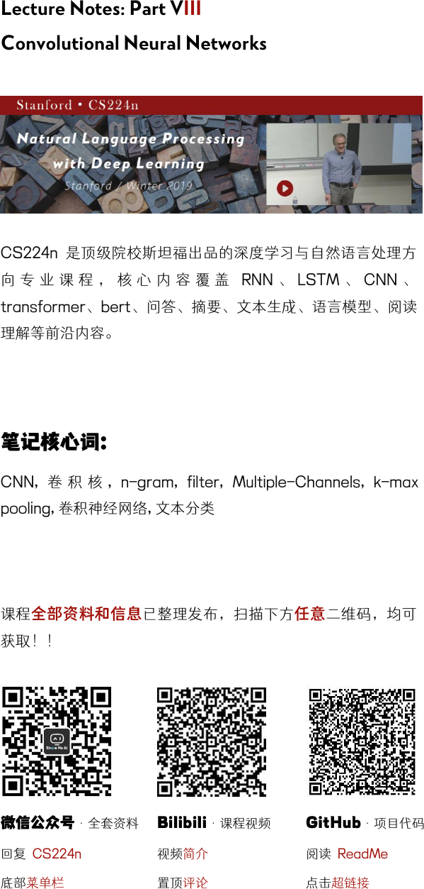
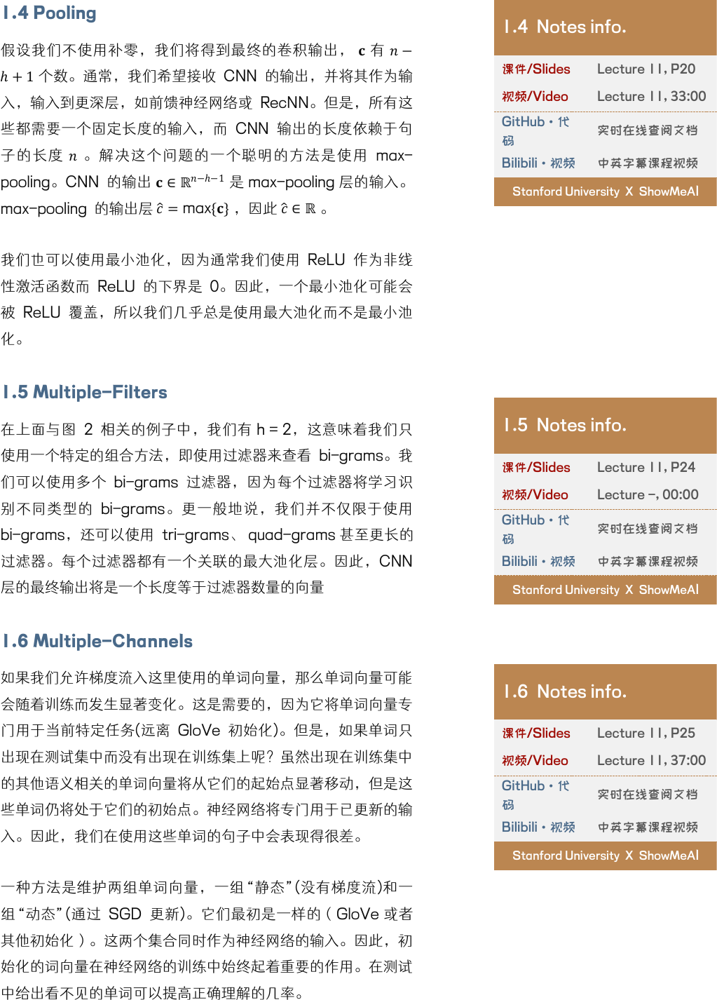
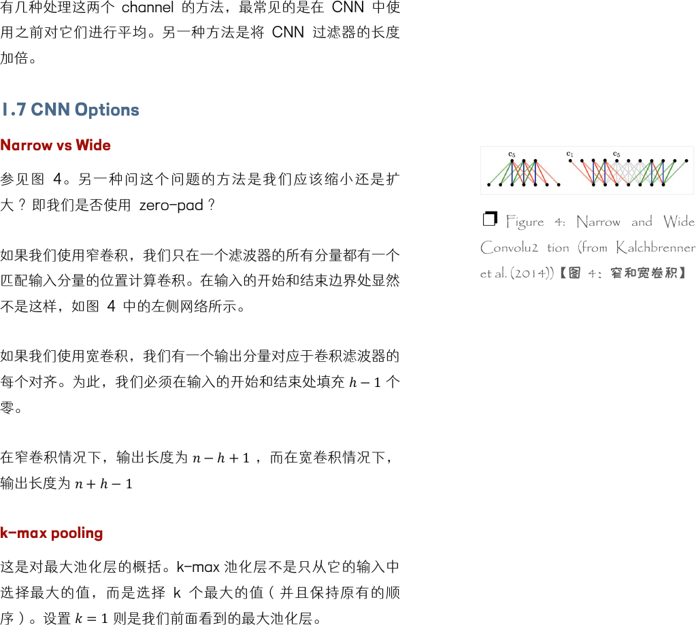

Lecture Notes: Part VIII
Convolutional Neural Networks
CS224n 是顶级院校斯坦福出品的深度学习与自然语言处理方
向 专 业 课 程 ， 核 心 内 容 覆 盖 RNN 、 LSTM 、 CNN 、
transformer、bert、问答、摘要、文本生成、语言模型、阅读
理解等前沿内容。
笔记核心词：
CNN, 卷 积 核 , n-gram, filter, Multiple-Channels, k-max
pooling, 卷积神经网络, 文本分类
课程全部资料和信息已整理发布，扫描下方任意二维码，均可
获取！！
微信公众号·全套资料
回复 CS224n
底部菜单栏
Bilibili·课程视频
视频简介
置顶评论
GitHub·项目代码
阅读 ReadMe
点击超链接

1. CNNs (Convolutional Neural Networks)
1.1 Why CNNs?
卷积神经网络接收词向量的序列，并首先为所有子短语创建短语
向量，而不仅仅是语法正确的短语(与递归神经网络一样，将在
下一组笔记中讨论)。然后，CNNs 将他们分组完成手头的任
务。
1.2 What is Convolution?
我们从一维的情况开始。考虑两个一维向量
和
，其中
是
主向量，g 是 filter。和 之间的卷积，第 n 项处的值表示为
(∗)[]
，它等于
=−
[−][]
。
右图 1 显示了二维卷积的情况。
9×9
的绿色矩阵表示关注的
主矩阵
。
3×3
的红色矩阵表示 filter g，当前正在计算的卷积
位于位置[2,2]。图 1 显示了第二个表中[2,2]= 4 处卷积的值。
你能完成第二张表格吗?
1.3 A Single-Layer CNN
考虑单词向量
∈
和一个 n 个单词的句子的单词向量串
联，
1:
=
1
⊕
2
…⊕
。最后，考虑卷积滤波器 ∈
ℎ
，
即作用于 h 个单词。对于
=2,=5,ℎ=3
，图 2 为 NLP 的
单层卷积层。在"the country of my birth"这个句子中，连续三
个单词的每一个可能组合都将得到一个值。注意，滤波器 w 本
身 是 一 个 向 量 ， 我 们 将 有
=
:|ℎ−1
+
来 给 出 =
1
,
2
…
−ℎ+1
∈
−ℎ+1
。 最 后 两 个 时 间 步 ， 即 从 “my” 或
“birth”开始，我们没有足够的字向量来与滤波器相乘(因为 h =
3)。如果我们需要与后两个词向量相关的卷积，一个常见的技巧
是用 h - 1 个零向量填充句子的右边，如右图 3 所示。
1.1 Notes info.
课件/Slides
Lecture 11, P16
视频/Video
Lecture 11, 8:00
GitHub·代码
实时在线查阅文档
Bilibili·视频
中英字幕课程视频
Stanford University X ShowMeA
I
1.2 Notes info.
课件/Slides
Lecture 11, P9
视频/Video
Lecture 11, 11:00
GitHub·代码
实时在线查阅文档
Bilibili·视频
中英字幕课程视频
Stanford University X ShowMeA
I
❐ Figure 1: Convolution in the 2D
case【图 1:2D 情况下的卷积】
❐ Figure 2: Single-Layer
Convolution: one-step【图 2：单层
卷积：一步】
❐ Figure 3: Single-Layer
Convolution: all-steps【图 3：单层
卷积：所有步骤】

1.4 Pooling
假设我们不使用补零，我们将得到最终的卷积输出， 有 −
ℎ+1
个数。通常，我们希望接收 CNN 的输出，并将其作为输
入，输入到更深层，如前馈神经网络或 RecNN。但是，所有这
些都需要一个固定长度的输入，而 CNN 输出的长度依赖于句
子的长度
。解决这个问题的一个聪明的方法是使用 max-
pooling。CNN 的输出 ∈
ℝ
−ℎ−1
是 max-pooling 层的输入。
max-pooling 的输出层
=max{}
，因此
∈ℝ
。
我们也可以使用最小池化，因为通常我们使用 ReLU 作为非线
性激活函数而 ReLU 的下界是 0。因此，一个最小池化可能会
被 ReLU 覆盖，所以我们几乎总是使用最大池化而不是最小池
化。
1.5 Multiple-Filters
在上面与图 2 相关的例子中，我们有 h = 2，这意味着我们只
使用一个特定的组合方法，即使用过滤器来查看 bi-grams。我
们可以使用多个 bi-grams 过滤器，因为每个过滤器将学习识
别不同类型的 bi-grams。更一般地说，我们并不仅限于使用
bi-grams，还可以使用 tri-grams、 quad-grams 甚至更长的
过滤器。每个过滤器都有一个关联的最大池化层。因此，CNN
层的最终输出将是一个长度等于过滤器数量的向量
1.6 Multiple-Channels
如果我们允许梯度流入这里使用的单词向量，那么单词向量可能
会随着训练而发生显著变化。这是需要的，因为它将单词向量专
门用于当前特定任务(远离 GloVe 初始化)。但是，如果单词只
出现在测试集中而没有出现在训练集上呢？虽然出现在训练集中
的其他语义相关的单词向量将从它们的起始点显著移动，但是这
些单词仍将处于它们的初始点。神经网络将专门用于已更新的输
入。因此，我们在使用这些单词的句子中会表现得很差。
一种方法是维护两组单词向量，一组“静态”(没有梯度流)和一
组“动态”(通过 SGD 更新)。它们最初是一样的（GloVe 或者
其他初始化）。这两个集合同时作为神经网络的输入。因此，初
始化的词向量在神经网络的训练中始终起着重要的作用。在测试
中给出看不见的单词可以提高正确理解的几率。
1.4 Notes info.
课件/Slides
Lecture 11, P20
视频/Video
Lecture 11, 33:00
GitHub·代
码
实时在线查阅文档
Bilibili·视频
中英字幕课程视频
Stanford University X ShowMeAI
1.5 Notes info.
课件/Slides
Lecture 11, P24
视频/Video
Lecture -, 00:00
GitHub·代
码
实时在线查阅文档
Bilibili·视频
中英字幕课程视频
Stanford University X ShowMeAI
1.6 Notes info.
课件/Slides
Lecture 11, P25
视频/Video
Lecture 11, 37:00
GitHub·代
码
实时在线查阅文档
Bilibili·视频
中英字幕课程视频
Stanford University X ShowMeA
I

有几种处理这两个 channel 的方法，最常见的是在 CNN 中使
用之前对它们进行平均。另一种方法是将 CNN 过滤器的长度
加倍。
1.7 CNN Options
Narrow vs Wide
参见图 4。另一种问这个问题的方法是我们应该缩小还是扩
大 ？即我们是否使用 zero-pad ？
如果我们使用窄卷积，我们只在一个滤波器的所有分量都有一个
匹配输入分量的位置计算卷积。在输入的开始和结束边界处显然
不是这样，如图 4 中的左侧网络所示。
如果我们使用宽卷积，我们有一个输出分量对应于卷积滤波器的
每个对齐。为此，我们必须在输入的开始和结束处填充 ℎ−1个
零。
在窄卷积情况下，输出长度为
−ℎ+1
，而在宽卷积情况下，
输出长度为 +ℎ−1
k-max pooling
这是对最大池化层的概括。k-max 池化层不是只从它的输入中
选择最大的值，而是选择 k 个最大的值（并且保持原有的顺
序）。设置
=1
则是我们前面看到的最大池化层。
❐ Figure 4: Narrow and Wide
Convolu2 tion (from Kalchbrenner
et al. (2014))【图 4：窄和宽卷积】

CS224n | Natural Language Processing with Deep Learning • Stanford University
Lecture Notes: Part VIII - Convolutional Neural Networks
5
机器学习
深度学习
自然语言处理
计算机视觉
知识图谱
Machine Learning
Deep Learning
Natural Language Processing
Computer Vision
Knowledge Graphs
Stanford · CS229
Stanford · CS230
Stanford · CS224n
Stanford · CS231n
Stanford · CS520
# 系列内容 Awesome AI Courses Notes Cheatsheets
图机器学习
深度强化学习
自动驾驶
Machine Learning with Graphs
Deep Reinforcement Learning
Deep Learning for Self-Driving Cars
Stanford · CS224W
UCBerkeley · CS285
MIT · 6.S094
...
...
...
是 ShowMeAI 资料库的分支系列，覆盖最具知名度的 TOP20+门 AI 课程，旨在为读者和学习者提供一整套
高品质中文学习笔记和速查表。
斯坦福大学(Stanford University) Natural Language Processing with Deep Learning (CS224n) 课程，是本
系列的第三门产出。
课程版本为 2019 Winter，核心深度内容(transformer、bert、问答、摘要、文本生成等)在当前(2021 年)工
业界和研究界依旧是前沿的方法。最新版课程的笔记生产已在规划中，也敬请期待。
笔记内容经由深度加工整合，以 5 个部分构建起完整的“CS224n 内容世界”，并依托 GitHub 创建了汇总
页。快扫描二维码，跳转进入吧！有任何建议和反馈，也欢迎通过下方渠道和我们联络 (*￣3￣)~